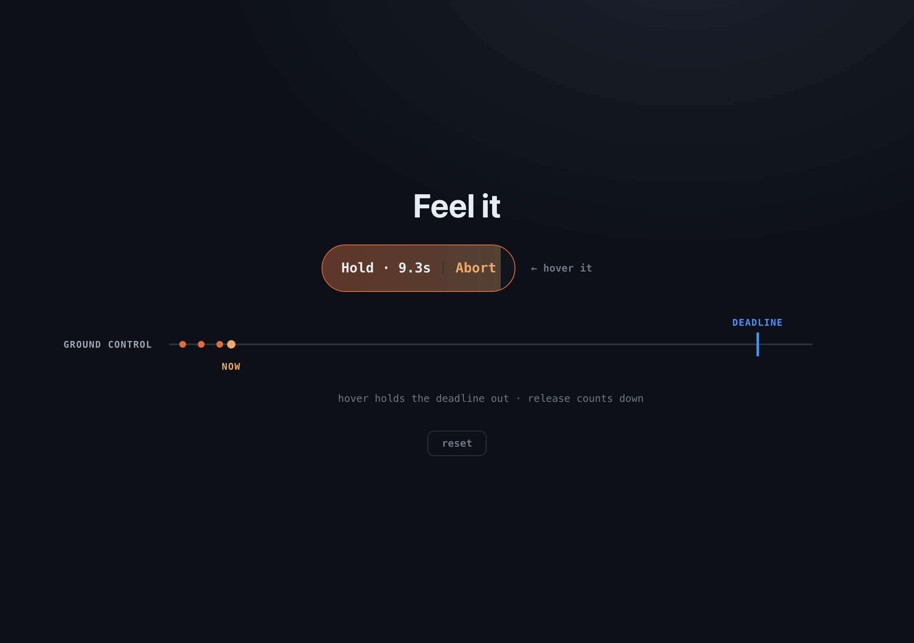
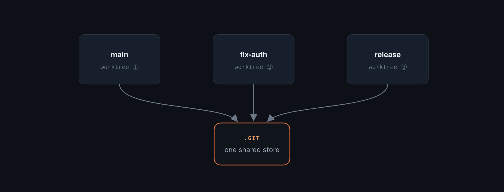
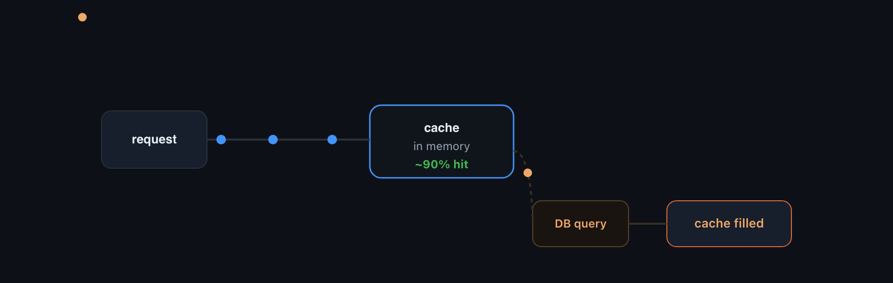
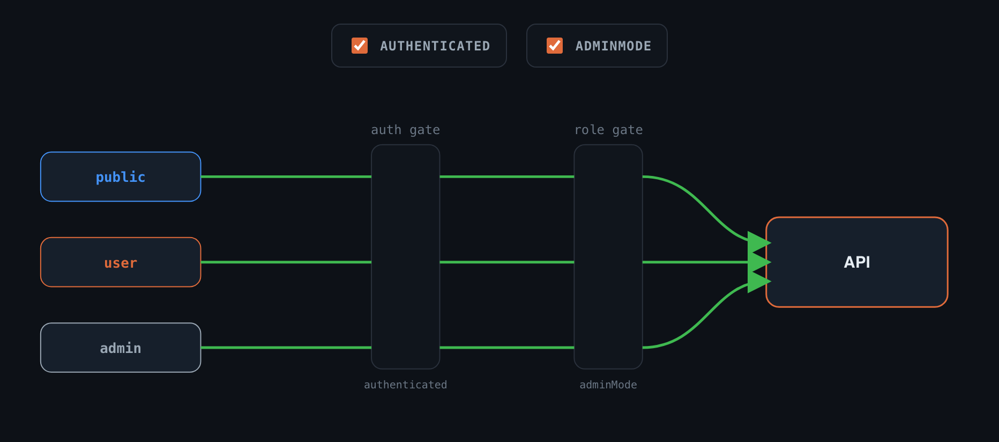
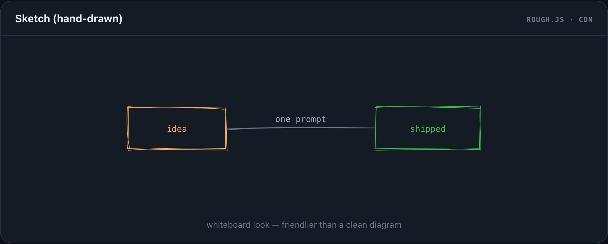
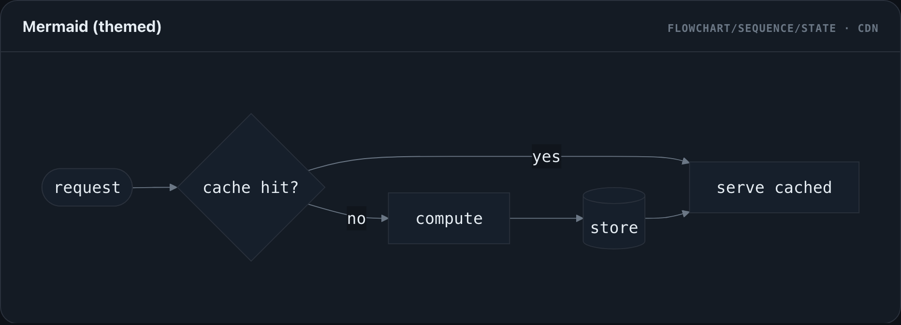
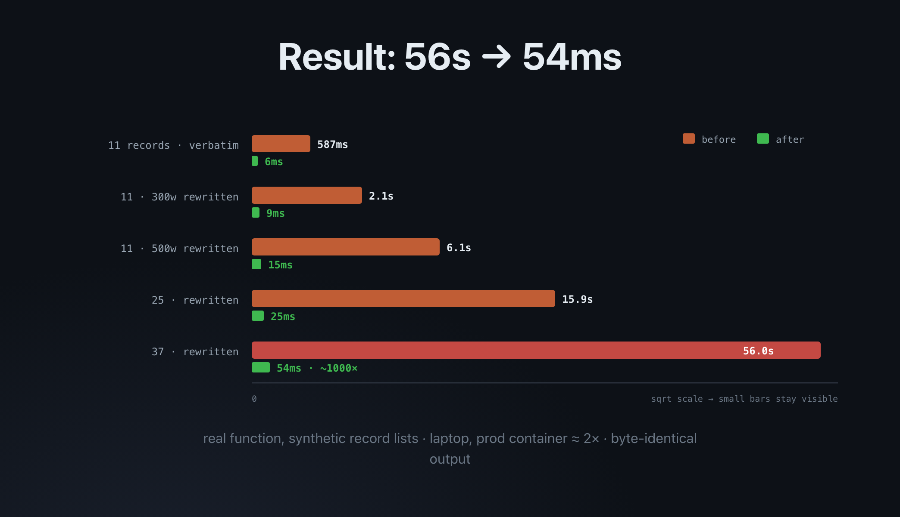
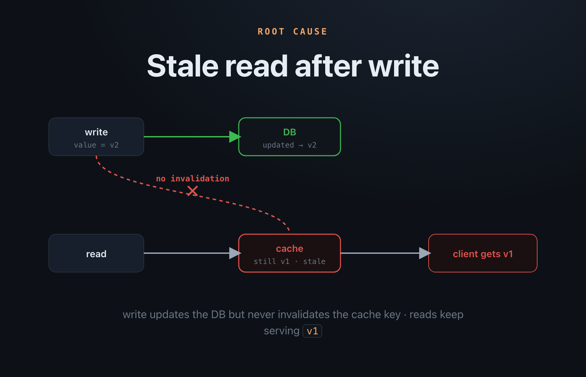

Stop reading walls of text.
Just show me.
A Claude Code skill that makes your AI agent draw the answer — diagrams, animated flows, slide decks — instead of dumping markdown.

1 · Iterate on plans with visuals you can poke
Instead of arguing over a 600-line markdown plan, your agent hands you an interactive diagram — hover it, toggle it, drag it. The problem and the solution land in seconds, and you say “no, do it this way” and it re-renders. The demo above is a real example: a 4-slide deck where you grasp an entire timing model by feeling it for five seconds.
Six primitives, nothing decorative
Every visual is composed from a small kit of proven, self-contained primitives — so output stays clean instead of drifting into clip-art.





2 · Your PR descriptions become a story of slides
When your agent opens a pull request, the description isn't a wall of text — it's the 1–4 slides that walk a reviewer through the change. They see the architecture and the fix before reading a line of the diff. Shot headless, uploaded inline with gh-img.


Install
The whole point: tell your agent “install justshowme” and it sets itself up. Or do it by hand:
# 1. Skill into your Claude Code skills dir git clone https://github.com/theolundqvist/justshowme cp -r justshowme/skills/visualize ~/.claude/skills/ # 2. PR screenshots (optional) gh extension install theolundqvist/gh-img # 3. Make it the default — paste docs/AGENTS-snippet.md # into your ~/.claude/CLAUDE.md (or AGENTS.md)
Works in any agent harness that reads a SKILL.md. Self-contained HTML output — no build step.